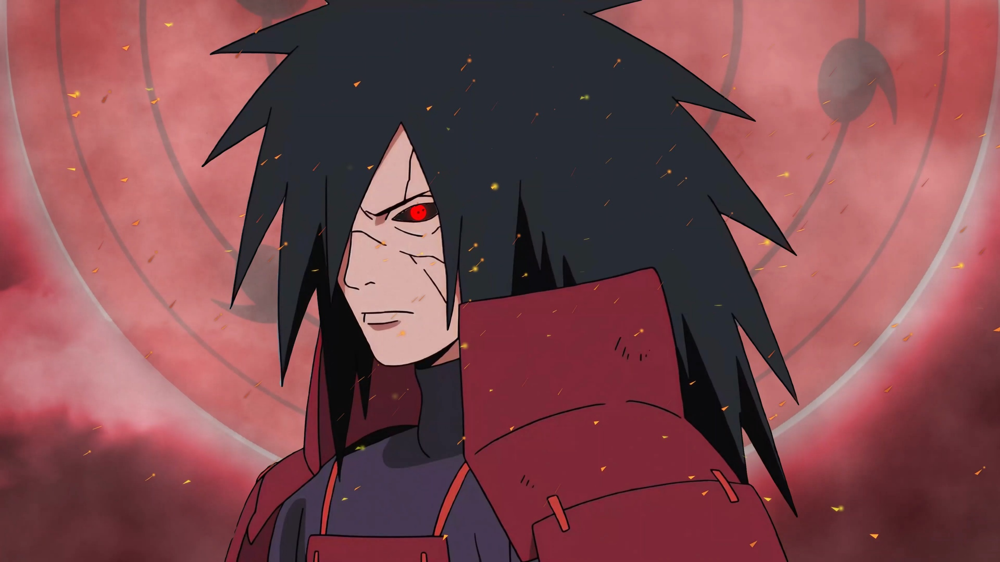

Madara Uchiha
Madara Uchiha foi um dos fundadores da Vila Oculta da Folha (Konohagakure) junto com Hashirama Senju. Ele é conhecido por ser um dos shinobis mais poderosos da história, com habilidades que o tornaram uma lenda. Após uma luta épica com seu amigo e rival Hashirama, Madara tornou-se o líder do clã Uchiha e começou a seguir um caminho de ambição em busca do poder absoluto.
Durante os eventos de *Naruto*, Madara desempenha um papel crucial como antagonista, sendo responsável por manipular eventos que levaram à Quarta Grande Guerra Ninja. Seu objetivo era criar um mundo onde as pessoas não sofressem mais, mas para isso, ele estava disposto a sacrificar tudo, inclusive sua própria humanidade.